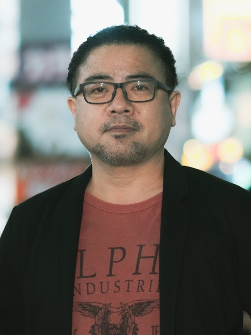

2021. TOKYO GAME SHOW celebrates its 25th anniversaries. Where will the game go in the next 25 years? What will happen to the game? The game creators are talking about the Great Change that is happening in the Game World.
Seitaro KIMURA
eFootball™ series Producer
Konami Digital Entertainment
In 1998, KIMURA joined Konami Digital Entertainment as a programmer. He has been on the "PES (Pro Evolution Soccer)" production team since 2001. He has since been involved in soccer titles as a producer since 2020, after working as a director and assistant producer. He is currently the producer of "eFootball™".
Morimasa SATO
Director, Consumer Games Development Divison1 R&D Department 1
Capcom
In 2014, SATO joined Capcom as a planner. In "BIOHAZARD 7 resident evil", in addition to the main scenario, he is involved in the overall game such as level design. He is also the lead game designer for the trial version of "BIOHAZARD 7 resident evil" and the DLC "End of Zoe". As a director of "Resident Evil Village", he continues to create scenarios and design general games following the previous work.
Katsuhiro HARADA
Chief Producer / Game Director
BANDAI NAMCO Entertainment
After graduating from Waseda University, HARADA joined NAMCO (currently BANDAI NAMCO Entertainment). He has been in charge of character design and animation control script development, including planning. He has also been a project leader for the Tekken series for 27 years and is currently working on new IP development while continuing his research in community management and marketing. His masterpieces include "Tekken" series, "Soul Caliber" series, Pokkén, and VR summer lessons.
Moderator
Katsuhiko HAYASHI
Famitsu Group Representative
KADOKAWA Game Linkage Inc.
After working as the editor-in-chief of "Weekly Famitsu", became Famitsu Group Representative from April 2020. In the ever-evolving gaming industry, he aims to create time-leading services and content.
Organizer Program
10.1 [Fri]
10:00-10:50
IGN JAPAN Presents Ask IGN Global: What the world really thinks of Japanese games
Japan has contributed many of the most iconic franchises in gaming history. But what do gamers around the world really think of Japanese games? This panel hosted by IGN JAPAN aims to answer that question. As the world’s biggest videogame news site, IGN has editions in nearly 30 regions and 25 languages, so we'll ask editors in regions including the United States, China, Europe and Southeast Asia about the game scene in each part of the world, and the Japanese games that matter to them. Then we'll ask some of Japan's top game developers to respond. Don't miss it!
Fumihiko YASUDA
Executive Officer, Head of Team NINJA
KOEI TECMO GAMES
Fumihiko Yasuda is an Executive Officer and Team NINJA Brand Manager at Koei Tecmo Games. Born in 1982 in Fukuoka Prefecture, he graduated from the University of Tokyo, Department of English in 2005. Yasuda joined Tecmo in 2006 (which merged with Koei to become Koei Tecmo Games in 2010). After serving as a planner and director of the NINJA GAIDEN series, he worked as the director of Nioh and a producer/director of Nioh 2 before assuming his current position.

Keiichiro Toyama
Bokeh Game Studio
CEO/Creator
After joining Konami in 1994, Keiichiro Toyama created Silent Hill, his first title as director. He left Konami in 1999 and joined Sony Computer Entertainment (now Sony Interactive Entertainment) to create the Siren and Gravity Rush series. He founded Bokeh Game Studio in 2020 as an independent studio.
Daniel ROBSON
Chief Editor
IGN JAPAN
Daniel Robson is the Chief Editor of IGN JAPAN. Born in England and a resident of Japan since 2006, Daniel has 20 years of experience in pop-culture media, along with a period as Community Manager at Sony Computer Entertainment's Japan Studio. In 2016, Daniel joined Japanese news leader Sankei Digital to launch IGN JAPAN, the Japanese-language edition of the world's biggest gaming media. Daniel enjoys a wide variety of games, and loves to discover hidden gems from around the world.
Aoi TATSUSE
Presenter/Narrator
Born into a generation that grew up with videogames, Aoi Tatsuse had an NES before she knew anything about anything. When her sister borrowed Dragon Quest III from a friend, Tatsuse became absorbed by it. Later, when she began working in the events industry, she realized that there were many videogame events too, and that is where she has worked ever since. Tatsuse has presented stage shows at many large-scale game events, including Tokyo Game Show and JAEPO.
10.2 [Sat]
9:00-9:50
Famitsu Presents The Appeal and Potential of RPG - Hironobu Sakaguchi and Naoki Yoshida / TGS2021 ONLINE Special Talk -
We are excited to have a special dialogue between Hironobu Sakaguchi, the creator of the "Final Fantasy" series and the creator of highly acclaimed "Fantasian, " his latest title, and Naoki Yoshida, the producer/director of "Final Fantasy XIV" as well as the producer of "Final Fantasy XVI, " the latest title in the series. They will discuss the appeal and the possibilities of RPG to their heart's content. *Please note that no new information of "FF" series will be announced during the broadcast.
Hironobu SAKAGUCHI
MISTWALKER CORPORATION
CEO
Born in 1962. The creator of the "Final Fantasy" series. He has worked on numerous RPGs such as "Blue Dragon, " "Lost Odyssey, " and "Terra Battle. " Since the establishment of Square (currently Square Enix), he has been in charge of the development department, and in 2004, he established the game production company Mistwalker. The latest work "FANTASIAN" is being distributed on Apple Arcade.
Naoki YOSHIDA
SQUARE ENIX Member of the Board
Producer & Director of FINAL FANTASY XIV
Producer of FINAL FANTASY XVI
Born in 1973. Joined Square Enix in 2005. He was the chief planner for "Dragon Quest X" and became the producer and director of "Final Fantasy XIV" in 2010. In charge of the development department as an executive officer since 2015. Appointed as a member of the board from 2018. Currently developing "FINAL FANTASY XVI" as a producer.
Moderator
Katsuhiko HAYASHI
KADOKAWA Game Linkage
Famitsu Group Representative
After working as the editor-in-chief of "Weekly Famitsu", became Famitsu Group Representative from April 2020. In the ever-evolving gaming industry, he aims to create time-leading services and content.
10.3.[Sun]
10:00-10:50
Is it really difficult to become a profession "game streamer"? What is the daily life and behind the scenes of production?
In 2020 (according to JAPAN ASSOCIATION FOR FINANCIAL PLANNERS) ranking of elementary school students (boys)'s "professions they want to be in the future", the 5th place is related to game production, and the 6th place is YouTuber, which is very popular with "game industry x influencer". Game streamers have a great influence on Generation Z. What is the daily life and production site of the game streamer who is longing for it? Popular game streamers will deliver the difficulty, fun, and rewardingness of making videos in a crosstalk format.
A game streamer who verifies things that interest nobamangames from his own perspective, focusing on simulation games. Not limited to live-action games, he is active in a wide range of activities such as live-action videos and gadget introductions.
CLAY
The love for baseball is No.1! Multi-game streamer
Specialist in baseball games such as Prospi A. In addition, CLAY post live-action videos of various games and live-action videos of baseball every day. We will continue to challenge a wide variety of things! Aim, the top creator of baseball multiplayer! Please pay attention not only to the outstanding visuals, but also to the high editing skills and talk skills.
V-kei game live streamer. A newborn maverick who appeared in the game industry. A game streamer who has a reputation for talking with sharp thrusts and editing at a good tempo, and provides viewers with laughter surprises! He also has a face as a game collector, and mainly collects game software and game-related goods.
MC
Shohei TAGUCHI
Born in Yokohama City, Kanagawa Prefecture. Former TV TOKYO announcer. Reputed to be "the best nerd in the announcer, " he has been active as an "e-sports caster" (a live announcer for e-sports events) even during the bureau announcer era.